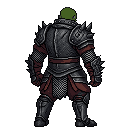
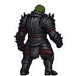
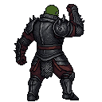
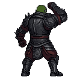
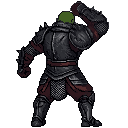
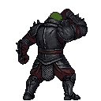
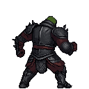

BODY_BACK_R_AXE_FULL_READY · TECHNICALLY_COMPLETE · VISUAL_REVIEW_REQUIRED Global ARTISTIC_REVISION_REQUIRED / PENDING_CREATOR. No weapon/grip, no propagation.
3× diagnosticnative128 / 1×tactical64 / 0.5×
Accepted keys preserved exactly at F03 / F04 / F07. Normal playback is one-shot and holds the final unarmed guard.
Complete layers-off sequence

00 guard 70 ms

01 load-begin 80 ms

02 elbow-hoist 90 ms

03 validated-hoist 100 ms

04 validated-apex 110 ms

05 drop-initiation 50 ms

06 forward-down-cleave 60 ms07 validated-impact 110 ms